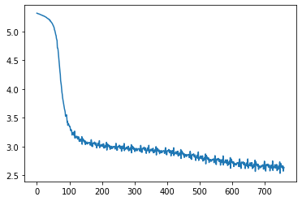

import torch
from torch import nn
from datasets import load_dataset
from tokenizers import Tokenizer
from tokenizers.models import BPE
from tokenizers.trainers import BpeTrainer
from transformers import PreTrainedTokenizerFastLesson 9: Introduction to Sequence Modelling
Intro - lots of things come as sequences, and text is common!
Embeddings: Working With Tokens
Concept of embeddings
Reference https://deeplearning.neuromatch.io/tutorials/W2D5_TimeSeriesAndNaturalLanguageProcessing/student/W2D5_Tutorial1.html and maybe link Lyle’s ‘Embeddings Rule’ video?
Modelling Sequences: Language Models
Explain the objective
Tokenizing Text
How do we split up text into tokens? We often talk about ‘words’ being the unit of text, but if we just go with a token for each word that we might encounter you’ll end up with a massive (1M) vocabulary filled with mostly obscure/misspelled words. But on the other hand letters would mean using far more tokens to represent the same sentence.
One solution.. explain wordpiece and co
Tokenizers: https://huggingface.co/docs/tokenizers/index
tokenizer = Tokenizer.from_pretrained("bert-base-uncased")encoding = tokenizer.encode('What a nice flooble!')
print('Encoding:', encoding)
ids = encoding.ids
print('ids:', ids)Encoding: Encoding(num_tokens=9, attributes=[ids, type_ids, tokens, offsets, attention_mask, special_tokens_mask, overflowing])
ids: [101, 2054, 1037, 3835, 13109, 9541, 3468, 999, 102]for t in ids:
print(f'{t}:{tokenizer.decode([t])}')101:
2054:what
1037:a
3835:nice
13109:fl
9541:##oo
3468:##ble
999:!
102:We have special tokens for start (101), end (102), symbols like ‘!’ (999) and separate tokens for a string like ‘oo’ or ‘ble’ if they don’t occur at the start of a word. Common words get a token, uncommon ones like flooble are broken down into components. THe full vocabulary size of this tokenizer is about 30,000 tokens:
len(tokenizer.get_vocab().items()) # The vocab size of this tokenizer30522Creating Our Own Tokenizer
Explain
dataset = load_dataset('tglcourse/abc_tunes', split='train').shuffle()
dataset[0]Using custom data configuration tglcourse--abc_tunes-5a89386c12e016f6
Reusing dataset parquet (/root/.cache/huggingface/datasets/tglcourse___parquet/tglcourse--abc_tunes-5a89386c12e016f6/0.0.0/7328ef7ee03eaf3f86ae40594d46a1cec86161704e02dd19f232d81eee72ade8){'Title': "Pat Hogan's One",
'Time Signature': '2/4',
'L': '1/8',
'Key': 'Edor',
'Tune': 'D>D FA|dc BA|BE EF|GA/G/ FE|D>D FA|dcBA|Be Bc|d2 d2:||:eB eB|eB B>c|dA dA|dA A2|eB eB|eB B>c|dB AF|E2 E2:|'}vocab_size = 100 # Explore different vocab sizes
tokenizer = Tokenizer(BPE(unk_token="[UNK]"))
trainer =BpeTrainer(special_tokens=["[UNK]", "[PAD]"],
vocab_size=vocab_size)
tokenizer.train_from_iterator(dataset['Tune'], trainer)
tokenizer = PreTrainedTokenizerFast(tokenizer_object=tokenizer,
pad_token="[PAD]",
unk_token="[UNK]")# TODOSee the docs for pre-tokenizer options: https://huggingface.co/docs/tokenizers/quicktour# ??tokenizer.trainPrinting out the decoded string (using ‘#’ as a separator) we ca see how the tune has turned into discrete tokens, some of thich are individual notes but many of which are combined.
ids = tokenizer.encode(dataset[0]['Tune']) # .ids if using the Tokenizer version
print(ids)
decoded = '#'.join([tokenizer.decode([t]) for t in ids])
print(decoded)[40, 34, 40, 4, 42, 37, 95, 71, 70, 4, 38, 37, 95, 38, 41, 4, 41, 42, 95, 43, 37, 19, 43, 19, 4, 42, 41, 95, 40, 34, 40, 4, 42, 37, 95, 71, 70, 38, 37, 95, 38, 72, 4, 38, 70, 95, 71, 22, 4, 71, 22, 30, 95, 95, 30, 72, 38, 4, 72, 38, 95, 72, 38, 4, 38, 34, 70, 95, 71, 37, 4, 71, 37, 95, 71, 37, 4, 37, 22, 95, 72, 38, 4, 72, 38, 95, 72, 38, 4, 38, 34, 70, 95, 71, 38, 4, 37, 42, 95, 41, 22, 4, 41, 22, 30, 95]
D#>#D# #F#A#|#d#c# #B#A#|#B#E# #E#F#|#G#A#/#G#/# #F#E#|#D#>#D# #F#A#|#d#c#B#A#|#B#e# #B#c#|#d#2# #d#2#:#|#|#:#e#B# #e#B#|#e#B# #B#>#c#|#d#A# #d#A#|#d#A# #A#2#|#e#B# #e#B#|#e#B# #B#>#c#|#d#B# #A#F#|#E#2# #E#2#:#|print(tokenizer.get_vocab()){'q': 84, '}': 96, 'í': 107, 'e': 72, '@': 36, 't': 87, 'ó': 109, 'U': 57, 'i': 76, '6': 26, '(': 12, 'b': 69, 'º': 101, '~': 97, 'f': 73, 'v': 89, '\t': 3, 'Q': 53, 'S': 55, '0': 20, '#': 7, '4': 24, 'Z': 62, 'ä': 104, 'T': 56, 'D': 40, '\x08': 2, '/': 19, '9': 29, 'G': 43, 'Y': 61, ')': 13, 'A': 37, '.': 18, 'I': 45, 'J': 46, 'á': 103, 'è': 105, 'V': 58, "'": 11, '^': 66, 'o': 82, '¬': 100, 'm': 80, '=': 33, 'p': 83, '!': 5, '[PAD]': 1, 'd': 71, 'z': 93, 'Ú': 102, '5': 25, ':': 30, '"': 6, '+': 15, 'M': 49, '$': 8, '<': 32, '&': 10, 'H': 44, 'N': 50, 'h': 75, 'é': 106, 'ñ': 108, 'F': 42, '*': 14, '\\': 64, 'l': 79, '[UNK]': 0, '2': 22, 'L': 48, 'E': 41, 'K': 47, 'a': 68, '\xa0': 98, 'R': 54, '7': 27, 'k': 78, '3': 23, ',': 16, '[': 63, '%': 9, 'ú': 110, 'n': 81, 'w': 90, 's': 86, 'c': 70, 'P': 52, '_': 67, 'y': 92, 'X': 60, ']': 65, 'r': 85, ';': 31, 'W': 59, '-': 17, 'u': 88, '8': 28, 'x': 91, 'g': 74, '{': 94, '|': 95, 'ª': 99, '>': 34, ' ': 4, '?': 35, '1': 21, 'B': 38, 'C': 39, 'O': 51, 'j': 77}An Embedding Layer
emb_dim = 32
emb_layer = nn.Embedding(vocab_size, emb_dim)
emb_layerEmbedding(100, 32)emb_layer(torch.tensor(ids)).shape # Passing our tokens throughtorch.Size([106, 32])A simple MLP
Similar to Karpathy’s makemore demo (TODO link)
How do we work with sequences of different lengths? Padding + truncation seem non-ideal…
batch_size=32
seq_len=64
batch_ids = torch.randint(vocab_size, (batch_size,seq_len))
batch_ids.shapetorch.Size([32, 64])emb_layer(batch_ids).shapetorch.Size([32, 64, 32])# A minimal model (output sizes shown
model = nn.Sequential(
nn.Embedding(vocab_size, emb_dim), # (batch_size, seq_length, emb_dim)
nn.Flatten(), # (batch_size, seq_length*emb_dim)
nn.Linear(emb_dim*seq_len, 64), # (batch_size, 64)
nn.ReLU(), # (batch_size, 64)
nn.Linear(64, 2), # (batch_size, 2)
)
model(batch_ids).shapetorch.Size([32, 2])Q: What happens when word position changes? Q: Would this work on different length sequences? Q: think of more Qs
Recurrent Neural Networks and LSTMs
Explain the basic architecture
https://pytorch.org/docs/stable/generated/torch.nn.RNN.html

Maybe demo?
Brief hand-wave explanation of LSTMs and link ULMFIT and co for the curious
Great blog by colah https://colah.github.io/posts/2015-08-Understanding-LSTMs/ Karpathy on RNN effectiveness: http://karpathy.github.io/2015/05/21/rnn-effectiveness/
# Create the RNN
input_size = 10 # Number of features in the input (embedding dim)
hidden_size = 20 # Number of features in the hidden state h
num_layers = 1 # Set to 2 for a 'stacked' RNN with 2 layers
rnn = nn.RNN(input_size, hidden_size, num_layers) # The model
# Run some dummy data through
# Create the model with batch_first=True if you'd like the batch dimension to come first
batch_size = 8
input_length = 5
x = torch.randn(5, batch_size, input_size)
h0 = torch.randn(num_layers, batch_size, hidden_size)
output, hn = rnn(x, h0)
# Check the output shapes
output.shape, hn.shape(torch.Size([5, 8, 20]), torch.Size([1, 8, 20]))class MyRNNClassifier(nn.Module):
def __init__(self, input_size=10, hidden_size=20, num_layers=2):
super().__init__()
self.emb_layer = nn.Embedding(vocab_size, input_size)
self.rnn = nn.RNN(input_size, hidden_size, num_layers=num_layers)
self.mlp = nn.Linear(hidden_size, 2)
def forward(self, x):
x = self.emb_layer(x) # TO embeddings (batch_size, seq_len, input_size)
net_output, h = self.rnn(x) # Through RNN (batch_size, seq_len, hidden_size)
averaged_output = net_output.mean(dim=1) # Take the mean of the outputs ('mean pooling')
result = self.mlp(averaged_output) # THrough the linear layer or MLP to get 2 outputs (assuming binary classification)
return resultnet = MyRNNClassifier()
net(batch_ids).shapetorch.Size([32, 2])sum([p.numel() for p in net.parameters()])2522[p.shape for p in net.parameters()][torch.Size([100, 10]),
torch.Size([20, 10]),
torch.Size([20, 20]),
torch.Size([20]),
torch.Size([20]),
torch.Size([20, 20]),
torch.Size([20, 20]),
torch.Size([20]),
torch.Size([20]),
torch.Size([2, 20]),
torch.Size([2])]# TODO try on some dataLSTMs
https://colah.github.io/posts/2015-08-Understanding-LSTMs/
something something memory
class MyLSTMClassifier(nn.Module):
def __init__(self, input_size=10, hidden_size=20, num_layers=2):
super().__init__()
self.emb_layer = nn.Embedding(vocab_size, input_size)
self.rnn = nn.LSTM(input_size, hidden_size, num_layers=num_layers)
self.mlp = nn.Linear(hidden_size, 2)
def forward(self, x):
x = self.emb_layer(x) # TO embeddings (batch_size, seq_len, input_size)
net_output, h = self.rnn(x) # Through RNN (batch_size, seq_len, hidden_size)
averaged_output = net_output.mean(dim=1) # Take the mean of the outputs ('mean pooling')
result = self.mlp(averaged_output) # THrough the linear layer or MLP to get 2 outputs (assuming binary classification)
return resultnet = MyLSTMClassifier()
net(batch_ids).shapetorch.Size([32, 2])sum([p.numel() for p in net.parameters()])6962Using Learned Representations
Do review classification or something using a learned embedding combined with an RNN? Or model tunes and then classify into type/key/mode?
Yeah tunes will be good. LM objective first, then re-training
class LM(nn.Module):
def __init__(self, input_size=32, hidden_size=128, num_layers=2, vocab_size=200):
super().__init__()
self.emb_layer = nn.Embedding(vocab_size, input_size)
self.rnn = nn.LSTM(input_size, hidden_size, num_layers=num_layers)
self.mlp = nn.Linear(hidden_size, vocab_size)
def forward(self, x):
x = self.emb_layer(x) # TO embeddings (batch_size, seq_len, input_size)
rnn_output, h = self.rnn(x) # Through RNN (batch_size, seq_len, hidden_size)
return self.mlp(rnn_output)lm = LM()
tokeized_tune = torch.tensor([tokenizer.encode(dataset[0]['Tune'])])
x = tokeized_tune[:,:-1] # All but the last token
y = tokeized_tune[:,1:] # All but the first token (x shifted by 1)
x.shape, lm(x).shape, y.shape(torch.Size([1, 105]), torch.Size([1, 105, 200]), torch.Size([1, 105]))torch.tensor(tokenizer(dataset['Tune'][:10], padding=True)['input_ids']).shapetorch.Size([10, 339])def lm_loss_function(model_pred, y):
b, n, vc = model_pred.shape
pred = model_pred.reshape(b*n, vc)
target = y.flatten()
return nn.functional.cross_entropy(pred, target)
lm_loss_function(lm(x), y)tensor(5.2998, grad_fn=<NllLossBackward0>)from datasets import Datasetdataset = load_dataset('tglcourse/abc_tunes', split='train').shuffle()
max_length = 201
tokenized_tunes = tokenizer(dataset['Tune'], padding=True, truncation=True, max_length=max_length)['input_ids']
lm_dataset = Dataset.from_dict({
'x':torch.tensor([t[:-1] for t in tokenized_tunes]),
'y':torch.tensor([t[1:] for t in tokenized_tunes]),
})
lm_dataloader = torch.utils.data.DataLoader(lm_dataset.with_format("torch"), batch_size=256)Using custom data configuration tglcourse--abc_tunes-5a89386c12e016f6
Reusing dataset parquet (/root/.cache/huggingface/datasets/tglcourse___parquet/tglcourse--abc_tunes-5a89386c12e016f6/0.0.0/7328ef7ee03eaf3f86ae40594d46a1cec86161704e02dd19f232d81eee72ade8)batch = next(iter(lm_dataloader))
batch['x'].shape, batch['y'].shape(torch.Size([256, 200]), torch.Size([256, 200]))from tqdm.notebook import tqdmlm = LM().cuda()
optimizer = torch.optim.Adam(lm.parameters(), lr=1e-4)
losses = []
for epoch in range(10):
for batch in tqdm(lm_dataloader):
x = batch['x'].cuda()
y = batch['y'].cuda()
model_preds = lm(x)
loss = lm_loss_function(lm(x), y)
loss.backward()
losses.append(loss.item())
optimizer.step()
optimizer.zero_grad()from matplotlib import pyplot as plt
plt.plot(losses)
import numpy as np
def generate(model, start_text, n, max_length=200, top_k=None):
model.eval()
tokenized_start = torch.tensor([tokenizer(start_text)['input_ids']]).cuda()
x = tokenized_start
for i in range(n):
model_pred = model(x)
last_word_logits = model_pred[0][0]
p = torch.nn.functional.softmax(last_word_logits, dim=0).data
# Set p to zero for special tokens we don't want
p[:4] = 0
# Sample
if top_k is None:
candidate_tokens = np.arange(len(last_word_logits))
else:
p, candidate_tokens = p.topk(top_k)
candidate_tokens = candidate_tokens.detach().cpu().numpy().squeeze()
p = p.detach().cpu().numpy().squeeze()
word_index = np.random.choice(candidate_tokens, p=p/p.sum())
x = torch.cat([x, torch.tensor([[word_index]]).cuda()], dim=-1)
return tokenizer.decode(x.flatten())
generate(lm, 'B|F', 20)'B | F b Z X, c : Y º B l [ B'generate(lm, 'B|F', 200,top_k=20)'B | F 2 e F 3 ( ( a / A c E A E " " a d a g c E D : A c B F f G : / d a c A : f D E ( a " e 2 D 2 F 2 3 E " c a f 2 2 A G " d E / E G c 2 / D a | 2 B D f B B g e c e d B e g ( f ( D g 3 G e : c g g g ( : | 2 2 / : a " F G c 3 f " F / | f " c E 3 F a g F | f e G 2 D f E d E f a g G ( 3 c g ( G / E F 3 : ( " 2 3 2 ( e G G E c / A g : / B e a / / d : A f c / : E 2 " f : 3 G | / | d | / F " F'sum([p.numel() for p in lm.parameters()])247240# TODO try on some data (LM first then new classification head)# TODO talk about efficiency of training vs sampling
# TODO demo different sampling approachesPage stats: Total Hits:  Page visitors:
Page visitors: